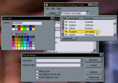

VB5 Drop Down Form Control Binary (18K)
VB5 Drop Down Form Control Binary (18K)
 VB5 Drop Down Form Control Demonstration (44K)
VB5 Drop Down Form Control Demonstration (44K)
 VB5 Drop Down Form Control Full Source (81K)
VB5 Drop Down Form Control Full Source (81K)
 VB6 Drop Down Form Control Binary (19K)
VB6 Drop Down Form Control Binary (19K)
 VB6 Drop Down Form Control Demonstration (48K)
VB6 Drop Down Form Control Demonstration (48K)
 VB6 Drop Down Form Control Full Source (86K)
VB6 Drop Down Form Control Full Source (86K)
 21 Mar 2000
21 Mar 2000
First Posted
 Creating drop-down tool windows
Creating drop-down tool windows
 Subclassing Without The Crashes
Subclassing Without The Crashes

vbAccelerator Drop-Down and Popup Form Control
Enables any VB form to be used as a drop-down, plus ensures all forms with the ToolWindow style operate just like Office
This control allows you to use any form as a drop-down window, and optionally to drag the form off and float it over the form. The form behaves just like the drop-down windows in Office, albeit you cannot currently dock them (yet!) The code includes a VB titlebar modifier class which ensures that any owned forms with the WS_EX_TOOLWINDOW style (i.e. VB WindowStyles 4 and 5) shown in a VB app do not take focus away from the owner form's titlebar - and the form also stays active in the TaskBar too. This functionality is completely generic and works regardless of how many taskbar forms you have in your app.
Please Release Me
The preview of this control was launched back in August, with the aim of a release a month later Unfortunately, the preview version hit a snag. When you showed a drop-down window, the tasklist switched so it looked like your form was inactive. It doesn't sound like much, does it? Surely you could fix that with a couple of quick API calls? Well, that just didn't happen. The problem with this sort of thing is that whilst VB performs incorrectly, the implementation is hidden and there is no way of working out what it is doing. And the implementation relies on certain messages being passed correctly, so although it was possible to solve parts of the problem (keep the form's titlebar in focus or keep the task bar icon highlighted), many of the solutions had consequences on VB's ability to track the focus control or form. These consequences vary from the tedious (focus always switches to an MDI child form, or have to click twice on a control to make it operate) to the dramatic (blue screen of death, Kernel32.exe faults, white GPF screens, deadcafe... I've had every single one now!)
The Question, or the Answer?
Anyway, seven months later, I spotted a Q&A article by Karl Peterson in VBPJ, where he writes an "Ask the VB Pro" column. The question in question was how to set your application's icon so it always shows correctly in the Alt-Tab list. The interesting thing about the article was it described how VB creates a hidden window (with the class name ThunderMain) which is the ultimate owner of all other VB windows in a VB application. Hmmm... So would that affect the TaskBar, then?
You can find the window if you fire up Spy++ and point it at a top-level VB form and then look for the parent window, or, if you're in VB, you can get the window handle using the GetWindow API call:
hWndThunderMain = GetWindow(Me.hWnd, GW_OWNER)
It took some playing to work out that you can prevent the Taskbar icon from losing its highlight by making the ThunderMain window invisible when you are about to show an owned window. A bit more playing revealed that the perfect behaviour was achieved if you instead just stripped the WS_VISIBLE style bit at the appropriate time, the appropriate time being when the ThunderMain window gets a WM_WINDOWPOSCHANGING message, because it is about to modify the ZOrder position and when the window returned by the GetActiveWindow API call is owned by another VB window rather than ThunderMain. Cool! Three or four versions later, and finally here is the code: a full, generic implementation of the MS Office integration of its main window with Win32, which works on Win95,98,NT,2000 and XP.
Pregnant - by the Boy I was Babysitting
Since VB operates by only setting up one ThunderMain window per VB application, this results in a tricky coding problem when it comes to add the subclass. If every window just adds a subclass to the ThunderMain window, then you end up processing the same message multiple times when a window is shown. This works fine when you have one window in the application - but of course, that isn't a problem anyway! When you have two windows, you get into problems, particularly when the windows have contradictory intentions about what to do with the taskbar icon - and they start "fighting" each other, causing your VB app to go into a flickering loop which can only be stopped by extreme use of Task Manager :)
The solution to this problem is to ensure that regardless of the source object, only one subclass is installed, and its processing works without reference to the object which installed the subclass (otherwise you need to fire the same message to multiple objects, and they could return conflicting results).
Whilst the Subclassing and Timer Assistant component available from this site solves most subclassing issues, it doesn't solve this one, so some customised subclassing code was needed to ensure the object behaves in this manner. You can find this code in the module mTitleBarMod.bas within the Drop-Down form control. Note that if any other component within your application needed to subclass the hidden VB window, you could run into problems with this subclassing approach: it would no longer be guaranteed to receive messages in the same order and hence the focus processing could be lost.
The Drop-Down Form Package
This object is compiled as an ActiveX control with two constituent controls:
vbalTitleBarModifier
This component is invisible at runtime and installs the ThunderMain subclasser discussed above to ensure the titlebar activation is correct. This component should be added to all main forms in your application.
In use, this component has only one method; Attach. You pass in the hWnd of the form you are trying to show as a parameter and the control then does all the rest of the work.
vbalDropDownClient
This component acts as a replacement titlebar on windows with VB WindowStyle 4 or 5 and the Caption property set to blank and ControlBox set to False. It provides the automatic hide functionality when the form is set to drop-down and also enables the form to be "dragged-off" and floated on the screen. It also provides methods to restrict the size of the window on screen and can be used to auto-hide floating toolwindows when the user switches to anther application similar to the behaviour of Word and Excel.
This component provides a number of useful events to your dropdown window:
- AppActivate - Raised whenever the application is activated or inactivated. You can hide/show the tool window here to emulate the behaviour of Office.
- DeactivateForm - Raised whenever focus switches from the ToolWindow to another form in the application. If the window is in the drop-down state, then the control posts a WM_CLOSE message to the form, which has the same effect as if the user chose the System Menu close option.
- CaptionResize - Raised when the control has resized the caption, for example, when the form switches between the drop-down and floating states. This event enables you to position the controls on the form to the appropriate point.
- Moving - Raised whenever the form is moved. You can control the position of the form by modifying the left, top, width and height parameters of this event.
- RightClick - Raised whenever the user right clicks on the control.
- Sizing - Raised whenever the form is sized. You can control the position and size of the form by modifying the left,top,width and height parameters of this event.
The control's behaviour can be customised using the properties and methods:
- AllowResize
This property enables you to create a form which behaves like the Fixed ToolWindow but with the more pleasant 3D border provided by a Sizable ToolWindow. - AllowTearOff
Determines whether you can tear-off the control when it is in the drop-down state. - Caption
Gets/sets the caption of the Tool Window. - MoveOnFormMouseDown
If set to True, enables mouse clicks on the form to start the form moving as if it was a click on the titlebar. - ShowState
Gets/sets the current state of the Tool Window - hidden, shown in the drop-down position or shown floating.
For more information on the techniques used to detect sizing and activation changes in these controls, check out these articles:
- Detecting when another application is activated
- Sophisticated control over Window Sizing and Moving
- Reliable interception of WM_NCHITTEST messages
Showing Drop-Down Forms from Modal Forms
One problem with this technique is that you cannot use it directly from a form shown with modally in VB, otherwise you get the error message "Can't show non-modal form when modal form is displayed". There is a workaround for this problem by which you can emulate showing the form modally - see the article Emulating Modal Forms. This technique has the additional advantage in that it allows you to create VB projects which have an Internet Explorer style New Window option, but showing a modal form in one window does not block execution in the other.